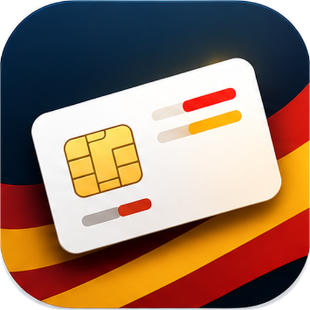

Native identity selection
Safari and other compatible apps can select the card’s Authentication identity through macOS. Browser-specific PKCS#11 configuration is unnecessary.

DNIe BridgeOpen source · Developer preview
Use the Authentication identity on your Spanish DNIe in Safari and other compatible macOS apps. Enter your PIN in the system prompt, while private-key operations run on the card.
Signed, notarized installer distribution and clean-Mac installation are still being validated.
Features
Safari and other compatible apps can select the card’s Authentication identity through macOS. Browser-specific PKCS#11 configuration is unnecessary.
macOS presents the authentication prompt. The DNIe performs private-key operations and retains its private keys.
DNIe Bridge uses the macOS smart-card stack and a USB CCID reader supported by macOS. The current card target is DNIe 4.0.
Compatible apps request an identity through Security.framework. Apple’s CryptoTokenKit routes the operation to the DNIe Bridge extension, which reaches the card through the system smart-card stack.
Development setup
Build and sign the development app locally with your Apple Development identity.
jq, and the macOS-provided MakeUsing the built app also requires a supported USB CCID reader and a DNIe 4.0.
git clone https://github.com/emcrisostomo/dnie-macos.git
cd dnie-macosThe build uses shared generation-2 protocol data distinct from your card’s PIN and private keys.
make prepareThis downloads and verifies the DGP ARM package and OpenSC inputs, then creates the local resource in its Git-ignored location. It extracts the DGP library without installing middleware and reuses valid existing data. See the preparation guide for prerequisites and offline inputs.
Run Make as your normal user.
make buildIf you have multiple Apple Development identities, use DNIE_SIGNING_IDENTITY_SHA1="YOUR_40_HEX_FINGERPRINT" make build. Replace the placeholder with your chosen identity’s 40-hex fingerprint.
Installation may request macOS administrator authorization.
make install
make statusInspect live reader/card state and separately observed native DNIe key references without opening a card session or requesting a PIN:
make card-infoInsert your DNIe and select its Authentication identity when a compatible app requests a certificate. Enter your PIN only in the native macOS prompt. Read the security guidance before testing a card.
Run this from the same checkout to remove the app installed through this workflow.
make uninstallFAQ
DNIe Bridge currently offers source and a local development build workflow. The release guide covers packaging and the remaining distribution checks.
Yes. These offline checks run without a reader, card, or generated terminal-data resource.
make check
make release-test
swift test --package-path Packages/DNIeCoreOnce the extension is installed, compatible apps use the macOS identity framework. An app or site must request a client certificate to offer the Authentication identity.
Original project code is offered under GPL-3.0-or-later. The third-party and resource notices cover attribution and the applicable terms.